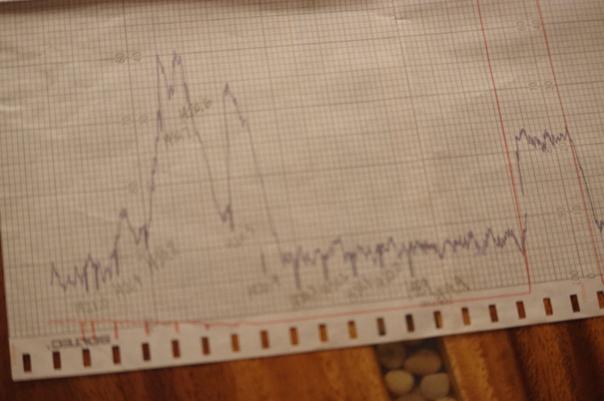
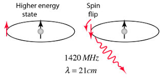
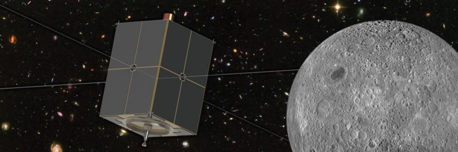
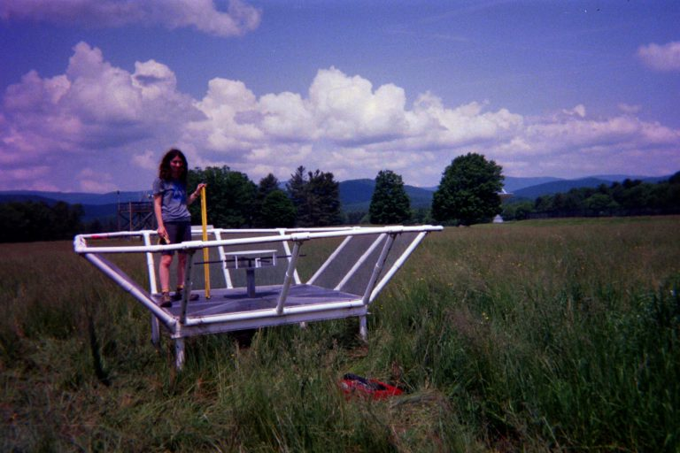

| Home |
| About |
| Blog |

| Hydrogen in Space: The Backbone of Radio Astronomy |
21 April 2020 |

|
Figure 1: Image source https://public.nrao.edu/gallery/worlds-first-automated-radio-telescope/. |
|
A memory from ninth grade that I will never forget is the weekend I spent learning to control a *real* radio telescope from an underground bunker brimming with panels of dials, switches, and knobs. Except for the telltale colorful student artwork scattered around, the tiny control room looked as if it would be right at home in an old-time science fiction flick. The telescope that I learned to operate was the forty-foot wide educational radio telescope at the Green Bank Observatory (Figure 1). Dr. Kathryn Williamson, an astronomy educator at the observatory, taught my younger brother and I how the telescope worked, and explained that we could use it to look for sources like supernova remnants and radio galaxies. Or, she told us, we could observe the signature of neutral hydrogen (HI) – the Universe’s most common element – in the Milky Way galaxy. We spent a thrilling night (and early morning) learning to talk to the telescope in its own language – positioning the obsolete but satisfying analogue controls in just the right way, then watching paper pour out of the chart recorder, covered in squiggly lines that showed us just what cosmic wonder was passing through our telescope’s view (Figure 2). Looking for hydrogen in the Milky Way was the most challenging observing project, but it was also the most exciting one. Dr. Williamson taught us that the hydrogen signal occurs at a very precise frequency – always at 1420.41 MHz. But when you observe the hydrogen signal in real life, it often appears slightly higher or lower than 1420.41 MHz, and slightly spread out. Why? These effects, Dr. Williamson explained, occur because the gas in the Milky Way is moving relative to Earth – so the signal will get stretched or squashed and appear at different frequencies – therefore, by measuring how different your signal’s frequency is from 1420.41 MHz, you can very easily figure out whether the piece of the Milky Way you are looking at is moving toward or away from you. If you are very ambitious and take these kinds of measurements all across the sky, you can even demonstrate the galaxy’s rotation using nothing but a small, modestly-equipped radio telescope. Because of how easy it is to get a good detection with relatively simple equipment, the hydrogen line is an extremely important tool for education as well as science. Williamson, who is now a professor at West Virginia University specializing in astronomy and physics education, has seen tremendous gains in students’ confidence and understanding of complex concepts when she uses a similar HI observation project in her classrooms: “I use [students’ observations of the HI line] as a way to introduce astronomy foundations, such as the electromagnetic spectrum, Doppler Effect, and even gravity… So I think it’s profound. I always tell students, with just a little bit of data and no prior formal training in astronomy, you were able to show that we live in a spiral galaxy, which direction we orbit the galactic center, and that our galaxy must contain dark matter. It gives students the chance to *do* astronomy and to feel part of the history of this great endeavor.” |
 |
Figure 2: The spiky signal on the left is the telltale trace of HI in the Milky Way, detected with the 40-Foot telescope at the Green Bank Observatory. |
|
Before we talk more about what kind of important science we can do by observing hydrogen in our galaxy and beyond, I’d like to go back to a point that I mentioned a moment ago – why is it that neutral hydrogen emits a signal at exactly 1420.41 MHz?
To understand the answer, we must consult a theory that forms the framework for much of modern physics – the strange and fascinating theory of quantum mechanics. Quantum mechanics is the physics of the very small, and attempts to describe the strange behavior of the particles that make up the universe. Ordinary matter – the stuff that makes up you, me, the Earth, the stars, and very nearly everything you can think of – is made up of fermions, or matter particles. You may recall that atoms are made up of protons, neutrons, and electrons – it turns out that protons and neutrons are made up of even tinier particles, called quarks. Quarks and electrons are fermions, and they (like all particles) exhibit a property known as “spin.” Spin is an intrinsic property of particles. It is actually impossible to visualize from our experiences in the ordinary, macroscopic world, and here’s why; to borrow an example from the book “Introduction to Quantum Mechanics” by Griffiths and Schroeter, let’s think about the Earth for a moment. You can picture the Earth spinning quite easily – just as you can imagine someone spinning a basketball. Now, picture another “spinning” scenario – think of the Earth orbiting the Sun. You may initially come to the conclusion that the Earth’s motion around the Sun is different from its rotation around its axis – but if you think a bit harder, you may realize that really, the two types of motion are quite similar. If you were to think of the Earth as a collection of dirt and rocks and water and life, and imagine all of these pieces spinning around a central axis, you can see that really, the rotation of Earth around its axis is just like the orbit of the Earth around the Sun (or, if we’re going to nitpick, the Earth actually orbits the center of mass between the two bodies). Both types of motion involve pieces of matter spinning around some central axis – and objects in this type of motion can be described as having extrinsic angular momentum. So why is it that we can’t visualize particle spin in the same way? Well, it comes down to the fact that particles are structureless points – so there are no composite pieces of a particle that can orbit around some “axis”, and the analogy between particle spin and macroscopic spin breaks down. We say that a particle’s spin is its intrinsic angular momentum, which is represented by a number – and although it is notoriously difficult to understand, this property of particles has been demonstrated experimentally time and again throughout the last century. The spin of any species of particle always maintains the same absolute value; for example, an electron always has spin ½ or spin -½, photons have spin 1 or spin -1, etc. The positive spin value represents the state of spin up and the negative spin value corresponds to spin down. From now on, let’s focus on the spin of an electron; when an electron is spin up, it has spin = ½. When it is spin down, spin = -½. When an electron flips from spin = ½ to spin = -½, it undergoes a spin-flip transition. You can think of an electron as a tiny magnet; just like any magnet, it has a north and south pole. And this magnetic property is related to spin – the axis, or line connecting the tiny magnet’s north and south pole is parallel to the electron’s spin axis. And because of these magnetic properties, if an electron is placed in a magnetic field, it can undergo a spin flip. Like a compass in the Earth’s magnetic field, an electron’s magnetic (and thus spin) axis rotates to align with the magnetic field, thus the spin can flip its direction. So what does all of this have to do with the 1420.41 MHz HI signal we detected with the 40-Foot? Well, let’s think about the structure of the hydrogen atom. An HI atom has a positively charged proton in its nucleus, and one negatively-charged electron that orbits that nucleus. We know that in most cases, the spin of the electron and the spin of the proton are aligned – both spin up. Like electrons, protons also act like small magnets and create a very, very small magnetic field near them. Well, in very rare cases, this tiny magnetic field can cause the electron’s spin to flip – so the electron becomes spin-down while the proton remains spin-up. This new state – with the electron and proton having opposite spins – is a lower energy state than the initial, spin-aligned state. Energy can never be created or destroyed, so to transition to this lower state the energy must be release in some way. In the case of this transition, the energy is released in the form of microwaves with a wavelength of precisely 1420.41 MHz. So our 1420.41 MHz HI signal comes from energy released by electrons spontaneously flipping their spin in hydrogen atoms across the galaxy. |
 |
Figure 3: Diagram courtesy http://hyperphysics.phy-astr.gsu.edu/hbase/quantum/h21.html. |
|
This spin-flip transition for HI is quite rare – so rare, in fact, that it is considered a “forbidden transition,” and on average it takes 130 years for an atom to undergo a spontaneous spin-flip. This transition was predicted to exist in 1944 by Hendrik van de Hulst, who was just 26 years old and a graduate student of astronomy at the time. Van de Hulst’s work laid the groundwork for further experimentation – first, scientists verified the existence of the transition with experiments on Earth, then astronomers began to contemplate if this 1420.41 MHz signal could be detected in the Milky Way. Now, van de Hulst’s advisor was the now-famous astronomer Jan Oort, who believed that, despite the rarity of this hydrogen transition’s occurrence, due to the large volumes of atomic hydrogen that were likely to be present in the Milky Way, radio astronomers should be able to detect the HI signal and use it to trace the motion of the Milky Way galaxy and possibly even detect spiral arms.
Over the next few years, astronomers across the world worked to develop the instrumentation they would need to detect this elusive signal. Astronomers Edward Purcell and his student Harold “Doc” Ewen built a horn antenna at Harvard and became the first researchers to successfully detect the telltale line at 1420.41 MHz. Ewen and Purcell’s discovery was quickly verified by teams in Holland and Australia, and although the Harvard team made the discovery, in the spirit of teamwork, they had the unusual courtesy to wait to publish their results until their worldwide collaborators had the time to compile their own papers summarizing their confirming detections – and all three papers, from the US, the Holland, and the Australia, were published at the same time in the journal Nature in 1951. |
Figure 4: Ewen and Purcell’s horn at the Green Bank Observatory |
|
The antenna that Ewen and Purcell used is now displayed at the Green Bank Observatory, where you can see it today. The discovery that Ewen and Purcell and their international collaborators made, building on the work of van de Hulst and Oort, has changed astronomy just as Oort predicted. Astronomers have been able to use the HI line to map the motion and structure of the Milky Way galaxy, making incredible discoveries about its evolution and history. Today, astronomers are still coming up with innovative ways to use the HI line to glean even more insights about our place in the universe.
One pervasive mystery which surrounds astronomy and cosmology today is the question of, what happened between the time after the Big Bang when the first atoms formed (an era called recombination) and the era when the first stars and galaxies formed (reionization)? Astronomers think that the early universe must have been full of neutral hydrogen gas (HI) – so in theory, we should be able to detect HI from that early time period. But astronomers also know that since the universe is expanding, we should see that radio waves from the distant gas are redshifted – in other words, shifted to lower frequencies – again due to the Doppler effect. So instead of observing HI in the early universe at 1420.41 MHz, astronomers are looking for the redshifted signal closer to 50 – 200 MHz. Many exciting new projects are in operation or development today to study this fascinating and critical moment in the universe’s history. Such projects include the Dark Ages Polarimeter Pathfinder (DAPPER), which is a NASA mission concept for a satellite which will be put in orbit around the moon and search for the faint whispers of HI in the early universe. |
 |
Figure 5: DAPPER. Source: https://www.colorado.edu/ness/dark-ages-polarimeter-pathfinder-dapper |
|
Detecting HI from the Cosmic Dawn is not such an easy feat to accomplish. “It is a very challenging measurement due to the weak signal from the hydrogen and the very strong radiation from electrons spiraling in the magnetic fields of galaxies (synchrotron emission), the thermal radiation, and anthropomorphic radio frequency interference, to name a few,” explains scientist and research engineer, Dr. Richard Bradley, “By far, this is the most difficult radio astronomy measurement ever attempted.”
Bradley, who has a joint appointment with the National Radio Astronomy Observatory (NRAO)’s Central Development Laboratory and the University of Virginia, is at the forefront of current research into this early stage of the history of the universe. Along with collaborators at UC Berkeley and the University of Colorado, Boulder, Bradley is a leading figure in the research teams that are developing DAPPER and its ground-based analogue, the Cosmic Twilight Polarimeter (CTP), soon to be deployed at the Green Bank Observatory. I had the good fortune to work with Dr. Bradley this summer as an intern; my job was to commission an instrument in the field at Green Bank; I scrubbed and helped reconfigure a small, previously disused antenna, which is now capable of collecting test data of radiation in the Milky Way and cosmic foreground. It was thrilling to know that I was helping – albeit in a small way –these researchers in their efforts to solve some of the mysteries that surround the universe’s early history. |
 |
Figure 6: A repurposed antenna element formerly belonging to the Precision Array for Probing the Epoch of Reionization (PAPER) in Green Bank, WV. |
|
The age-old question of “where did we come from?” is one that drives researchers in their quest to measure the HI signal in the Cosmic Dawn era. “What makes this interesting is that we know very little about this epoch of the Universe,” says Bradley, “The Hubble Deep Field provides a glimpse into galaxy formation, but how and when did this all occur? […] Only today, with the advent of modern high-speed digital signal processing techniques and machine learning methodologies coupled with specialized antennas and highly stable radio frequency electronics, is this signal detection and characterization within our grasp.”
The study of HI in our universe is much too broad a field to cover in one blog post; it touches almost every subfield of astronomy – so keep an eye out for future posts on the subject 😉 In the meantime, I hope I’ve conveyed just how much we can learn just by tuning our radio telescopes to the frequency of hydrogen, the simplest and most abundant element in our universe. |
Further Reading:
Previous post: Exploring Einstein's Relativity Next post: Margaret Burbidge: Made of Starstuff |